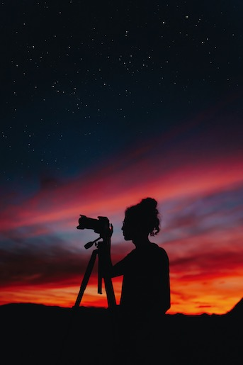

I am Patricia. I live in the San Francisco Bay Area but I am originally from Peru. I want to share with you all one of my most recent hobbies.
In general, I like to try to learn new things that make me excited and happy so I find out that taking pictures does the trick. I am not an expert and I am not promoting any business nor I am paid for any links of business mentioned here. This website is just to share some of my many interests.
I choose photography because I enjoy to capture special moments. I feel great joy capturing beautiful moments. Particularly like to take portraits and sunsets. I use my iPhone XR and my Nikon D7200. I started a gradual process of getting some tools to capture and edit photos. I was looking for some cameras new and used . I even asked some professional photographers and they recommended a few in the middle range.
Be aware that there are many cameras in the market. Depending on your budget and what you want to do with it, you can explore what suits you best. You can look these websites as a reference:
Once I got the camera I needed to process the photos, I used two Photo editors for Mac to edit and process my photos: Noiseless, PhotoScapeX
I also got some Photography apps for my iPhone: Facetune, Youcam Perfect and Clean Pics.
For advance photo editing, I tried: Affinity Photo https://affinity.serif.com/en-us/photo/
|
||
| Motery Bay Aquarium, 2019 | Bodega Bay June 21, 2020 | Cabo, 2018 |